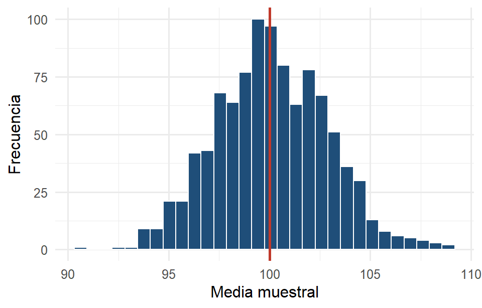

El contenido de este capítulo está completo, pero todavía no pasa por la revisión final de redacción. Se avisará en clase cuando quede listo para estudiar de aquí. Mientras tanto se puede consultar, con esa advertencia.
TipObjetivos del capítulo
Distinguir parámetro de estadístico.
Explicar qué es una distribución muestral y por qué es la pieza clave de la inferencia.
Enunciar y reconocer el Teorema Central del Límite (TCL).
Describir la distribución muestral de la media y de una proporción.
Empieza la Parte III. Ya sabemos explorar datos (Parte I) y producirlos bien (Parte II). Ahora viene la pregunta que da sentido a toda la estadística: ¿qué puedo decir sobre la población si solo vi una muestra? La respuesta descansa en una sola idea, la de este capítulo.
7.1 Parámetros y estadísticos
Un parámetro es un número que describe a la población: la proporción real de positivos, la masa media de todos los pingüinos. Casi nunca lo conocemos (es justo lo que queremos averiguar).
Un estadístico es el mismo número calculado sobre la muestra: la proporción de positivos en mi muestra, la masa media de los pingüinos que medí. Ese sí lo podemos calcular.
Por convención se usan letras distintas:
Cantidad
Parámetro (población)
Estadístico (muestra)
Media
\(\mu\)
\(\bar{x}\)
Desviación estándar
\(\sigma\)
\(s\)
Proporción
\(p\)
\(\hat{p}\)
Toda la inferencia consiste en usar el estadístico para decir algo sobre el parámetro. Y para eso necesitamos saber cuánto varía el estadístico de una muestra a otra.
7.2 La distribución muestral
Ya vimos este fenómeno en el Capítulo 4: cada muestra da un resultado distinto. Si tomáramos todas las muestras posibles de tamaño \(n\) y calculáramos el estadístico en cada una, la distribución de esos valores es la distribución muestral del estadístico.
Es una idea sutil, así que vale la pena decirla con cuidado: no es la distribución de los datos, sino la distribución de un resumen de los datos a lo largo de muchas muestras hipotéticas. Es lo que nos permite decir “mi estimación típicamente se aleja del valor real en tanto”.
Simulémosla. Tomamos muchas muestras de tamaño 30 de una población normal y guardamos la media de cada una:
set.seed(2026)medias <-replicate(1000, mean(rnorm(30, mean =100, sd =15)))ggplot(data.frame(m = medias), aes(x = m)) +geom_histogram(bins =30, fill ="#1F4E79", color ="white") +geom_vline(xintercept =100, color ="#C0392B", linewidth =1) +labs(x ="Media muestral", y ="Frecuencia")

Figura 7.1: Distribución muestral de la media (1000 muestras de tamaño 30).
mean(medias) # se centra en mu = 100#> [1] 100.1214sd(medias) # mucho menor que sigma = 15#> [1] 2.766057
7.3 La distribución muestral de la media
La simulación anterior ilustra un resultado exacto. Si tomamos muestras de tamaño \(n\) de una población con media \(\mu\) y desviación \(\sigma\), la media muestral \(\bar{X}\) cumple:
Su media es \(\mu\). En promedio, la media muestral acierta: es un estimador insesgado.
Su desviación estándar es \(\dfrac{\sigma}{\sqrt{n}}\), llamada error estándar.
El error estándar es la fórmula que explica todo lo que vimos en el laboratorio del Sección 4.3.1: la precisión mejora con \(\sqrt{n}\), no con \(n\). Para duplicar la precisión hay que cuadruplicar la muestra.
15/sqrt(30) # error estándar teórico#> [1] 2.738613sd(medias) # el que salió de la simulación: casi idéntico#> [1] 2.766057
7.4 El Teorema Central del Límite
Lo anterior vale siempre. Pero, ¿de qué forma es la distribución muestral? Si la población es normal, \(\bar{X}\) es normal exactamente. Lo asombroso es lo que ocurre cuando la población no es normal:
ImportanteTeorema Central del Límite
Para muestras suficientemente grandes, la distribución muestral de la media es aproximadamente normal, sin importar la forma de la población de origen.
Esto es lo que hace posible casi toda la inferencia del curso. Aunque no sepamos cómo se distribuyen los datos, sí sabemos cómo se comporta su media. Como regla práctica, \(n \geq 30\) suele bastar; con poblaciones muy sesgadas hace falta más.
7.4.1 Laboratorio: ver el TCL en acción
Aquí el deslizador vale más que mil palabras. Conviene elegir una población deliberadamente no normal (sesgada, uniforme o bimodal) y luego aumentar \(n\). Se observa cómo la distribución de las medias se vuelve acampanada y se angosta, aunque la población de origen no tenga nada de campana.
viewof forma = Inputs.select( ["sesgada (exponencial)","uniforme","bimodal","normal"], {value:"sesgada (exponencial)",label:"forma de la población"})viewof nTcl = Inputs.range([1,100], {value:1,step:1,label:"tamaño de muestra n"})
mediasTcl =Array.from({length:1200}, () => {let s =0;for (let i =0; i < nTcl; i++) s +=generar();return s / nTcl;})
Plot.plot({height:170,marginTop:24,title:"La población (los datos individuales)",x: { label:"valor",domain: [-1,9] },y: { label:"frecuencia" },marks: [ Plot.rectY(poblacion, Plot.binX({y:"count"}, {x: d => d,thresholds:45,fill:"#888780"})), Plot.ruleY([0]) ]})
Plot.plot({height:190,marginTop:24,title:`Distribución de la media muestral (n = ${nTcl})`,x: { label:"media muestral",domain: [-1,9] },y: { label:"frecuencia" },marks: [ Plot.rectY(mediasTcl, Plot.binX({y:"count"}, {x: d => d,thresholds:45,fill:"#1F4E79"})), Plot.ruleY([0]) ]})
NotaInterpretación
Con \(n = 1\) las dos gráficas son iguales. Una muestra de tamaño uno es un dato individual. Al subir a \(n = 5\) la asimetría ya se suaviza; hacia \(n = 30\) la distribución de las medias es prácticamente una campana simétrica, aunque la población de arriba siga siendo sesgada o bimodal. Nótese también que la campana se va angostando: es el error estándar \(\sigma/\sqrt{n}\) encogiéndose. Vale la pena el caso más contraintuitivo, “bimodal”: la población tiene dos jorobas y las medias forman una sola campana.
7.5 Trabajar con la normal: probabilidades y cuantiles
Como la normal aparecerá en todo lo que sigue, conviene tener a la mano las dos operaciones que se hacen con ella, que son inversas entre sí.
De un valor a una probabilidad. ¿Qué proporción de individuos queda por debajo de cierto valor? Se estandariza con \(z = \dfrac{x - \mu}{\sigma}\) (Capítulo 6) y se consulta la normal estándar. En R, pnorm():
# Girasoles con media 185 cm y desviación 17 cm:# ¿qué proporción mide menos de 200 cm?pnorm(200, mean =185, sd =17)#> [1] 0.811207# ¿qué proporción supera los 200 cm?1-pnorm(200, mean =185, sd =17)#> [1] 0.188793
De una probabilidad a un valor. La pregunta inversa: ¿qué valor deja por debajo cierta proporción? Ese valor es un cuantil (o percentil), y en R se obtiene con qnorm():
# ¿Qué altura es superada por el 10 % de los girasoles?# Es el cuantil que deja el 90 % por debajo.qnorm(0.90, mean =185, sd =17)#> [1] 206.7864
NotaInterpretación
La respuesta ronda los 207 cm. La clave para no equivocarse es traducir bien el enunciado: “superada por el 10 %” significa que el 10 % está por encima, es decir el 90 % por debajo, así que el cuantil que se busca es el 0.90 y no el 0.10.
Sin computadora, este cálculo se hace en dos pasos con una tabla de la normal estándar. Primero se busca el valor \(z\) que deja el 90 % por debajo (\(z \approx 1.282\)) y luego se deshace la estandarización, \(x = \mu + z\sigma = 185 + 1.282 \times 17 \approx 206.8\) cm. Conviene practicar ambas vías, porque en un examen sin computadora solo se dispone de la tabla.
Los cuantiles de la normal estándar que más se repiten son estos, y vale la pena reconocerlos:
Proporción por debajo
\(z\)
0.90
1.282
0.95
1.645
0.975
1.960
0.99
2.326
0.995
2.576
Los dos últimos renglones reaparecerán en el Capítulo 8 como los valores críticos de los intervalos de confianza al 95 % y al 99 %.
7.6 La distribución muestral de una proporción
Cuando la variable es categórica, el estadístico natural es la proporción muestral\(\hat{p}\). El mismo razonamiento aplica: si el muestreo es aleatorio, \(\hat{p}\) se centra en \(p\) y su error estándar es
\[\sqrt{\frac{p(1-p)}{n}}\]
y, por el TCL, para \(n\) suficientemente grande su distribución es aproximadamente normal. La regla práctica usual es que \(np \geq 10\) y \(n(1-p) \geq 10\).
La distribución muestral es el puente entre la muestra y la población:
Estadístico
Se centra en
Error estándar
Forma (n grande)
Media \(\bar{x}\)
\(\mu\)
\(\sigma/\sqrt{n}\)
Normal (por el TCL)
Proporción \(\hat{p}\)
\(p\)
\(\sqrt{p(1-p)/n}\)
Normal (si \(np \ge 10\) y \(n(1-p) \ge 10\))
Todo lo que sigue en el curso (intervalos de confianza y pruebas de hipótesis) se construye sobre esta tabla.
7.7 Resumen
Distinguimos parámetro (población, desconocido) de estadístico (muestra, calculable), y conocimos la distribución muestral: cómo varía un estadístico de una muestra a otra. Para la media, se centra en \(\mu\) y tiene error estándar \(\sigma/\sqrt{n}\); para la proporción, se centra en \(p\) con error estándar \(\sqrt{p(1-p)/n}\). El Teorema Central del Límite garantiza que, con muestras suficientemente grandes, ambas son aproximadamente normales aunque la población no lo sea. Con esta maquinaria ya podemos, en el Capítulo 8, construir intervalos de confianza y pruebas de hipótesis.
7.8 Ejercicios
Parámetro o estadístico. Clasificar cada cantidad: (a) la masa media de los 344 pingüinos medidos; (b) la proporción de positivos de todas las personas de Sonora; (c) la desviación estándar de la temperatura de las 32 lagartijas urbanas de nuestra base.
Error estándar. Una población tiene \(\sigma = 20\). Calcular el error estándar de la media para \(n = 25\), \(n = 100\) y \(n = 400\). ¿Cuánto hay que aumentar la muestra para reducir el error estándar a la mitad?
¿TCL o no? ¿En cuáles de estos casos se puede suponer que la media muestral es aproximadamente normal? (a) \(n = 50\) de una población muy sesgada; (b) \(n = 4\) de una población muy sesgada; (c) \(n = 4\) de una población normal.
Simulación. Repetir la simulación de la media muestral con \(n = 5\) y con \(n = 80\), usando rexp(n, rate = 1) como población (exponencial, muy sesgada). Comparar los histogramas y las desviaciones estándar.
Proporción. En una población con \(p = 0.4\) se toman muestras de \(n = 100\). ¿Cuál es el error estándar de \(\hat{p}\)? ¿Se cumplen las condiciones para usar la aproximación normal?
Interpretación. Explicar en dos frases, para alguien que no sabe estadística, por qué una encuesta a 1000 personas puede describir a un país entero.
TipSoluciones y retroalimentación
1. (a) Estadístico: se calculó sobre los pingüinos observados (la muestra). (b) Parámetro: describe a toda la población de Sonora. (c) Estadístico: se calculó sobre las lagartijas de nuestra base. Regla rápida: si lo pudiste calcular con los datos, es un estadístico; si te gustaría conocerlo pero no lo se tiene, es un parámetro.
2. Error estándar \(= \sigma/\sqrt{n}\): para \(n=25\) es \(20/5 = 4\); para \(n=100\) es \(20/10 = 2\); para \(n=400\) es \(20/20 = 1\). Hay que cuadruplicar la muestra para reducir el error a la mitad. Esta es la consecuencia práctica más importante del capítulo. La precisión es cara, porque crece con \(\sqrt{n}\) y no con \(n\). Pasar de 400 a 800 encuestas mejora poco; para el doble de precisión harían falta 1600.
3. (a) Sí: con \(n = 50\) el TCL ya suele funcionar bien incluso con sesgo. (b) No: con \(n = 4\) y población sesgada, la media muestral hereda el sesgo. (c) Sí: si la población es normal, la media es normal exactamente, para cualquier \(n\), sin necesidad del TCL. El caso (c) es el que más se olvida. El TCL es para poblaciones no normales; si ya es normal, no hace falta.
4. Ambos histogramas se centran cerca de 1 (la media de una exponencial con rate = 1). Con \(n = 5\) la distribución de medias sigue notoriamente sesgada a la derecha; con \(n = 80\) es simétrica y acampanada. Las desviaciones estándar son aproximadamente \(1/\sqrt{5} \approx 0.45\) y \(1/\sqrt{80} \approx 0.11\). Es el mismo fenómeno del laboratorio del Sección 7.4.1, ahora reproducido en R.
5. Error estándar \(= \sqrt{0.4 \times 0.6 / 100} = \sqrt{0.0024} \approx 0.049\). Condiciones: \(np = 40 \geq 10\) y \(n(1-p) = 60 \geq 10\); sí se cumplen, así que la aproximación normal es adecuada. Cuando \(p\) es muy cercana a 0 o a 1, estas condiciones fallan y hay que recurrir a métodos exactos.
6. Una redacción posible: “Cada encuesta da un resultado ligeramente distinto, pero esos resultados se agrupan de manera predecible alrededor del valor real, y qué tan agrupados están depende del tamaño de la muestra, no del tamaño del país. Con 1000 personas bien elegidas al azar, el resultado típico se aleja del valor verdadero solo unos tres puntos porcentuales.”Lo esencial es transmitir dos ideas: que lo que importa es el tamaño de la muestra y no la fracción de la población, y que la selección debe ser aleatoria (si no lo es, ni un millón de respuestas sirven, como vimos en el Capítulo 4).